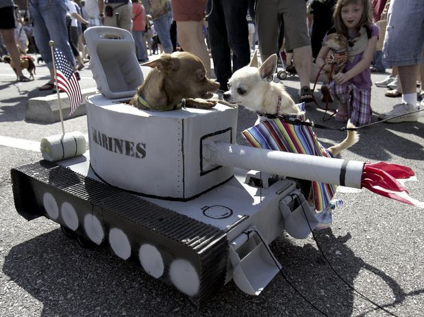

Forocarros es una web hecha por y para fans de los carros blindados de la segunda guerra mundial.
Aqui podras encontrar una galeria de imagenes con los blindados mas carismaticos de la IIGM.
Asi como un tablon de anuncios con informacion sobre los diversos eventos relacionados con el mundo del carro blindado y reportajes interesantes.
Sin duda un video genial acerda de esta maravilla de la ingenieria alemana.
El reportaje esta dividido en tres videos de 5 minutos de duracion cada uno aprox.
Aqui se nos puede ver en pleno desarrollo de ideas para la web
Para recibir noticias pincha AQUI